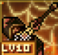

ANCIENT GEAR
古代裝備覺醒
古代裝備可由 LV1 逐階提升至 LV10，升級時保留既有強化，並把殘件素質刻印到新階段裝備上。覺醒後可額外獲得破攻屬性 20 萬。
殘件取得
遠征 Boss、周末活動掉落。分為武器、防具、飾品殘件，掉落時隨機產生浮動素質。
素質繼承
已升星過的裝備，覺醒最終素質 = 舊裝備目前素質 + LV 升級基礎成長差 + 殘件刻印。
覺醒結果
覺醒成功增加額外破攻；覺醒失敗僅扣除材料與楓幣，裝備本身不受影響。